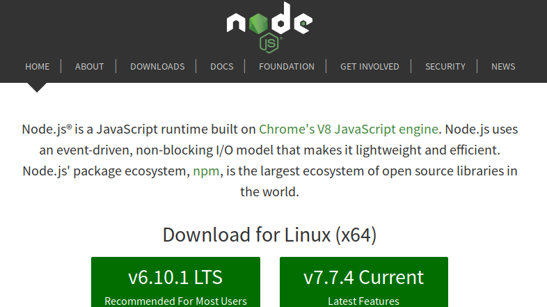
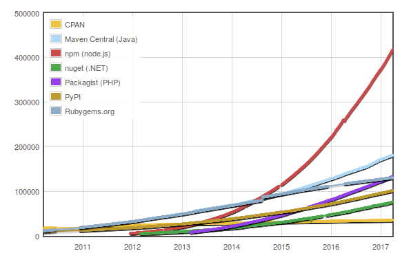

class: center, middle # What is Node.js and what is it used for? Slides up @ https://addaleax.net/what-is-node/ | https://github.com/addaleax/what-is-node --- From https://nodejs.org/:  --- > A JavaScript runtime built on Chrome's V8 JavaScript engine - “runtime” → A program that runs other programs - It uses the same language as browsers - If you know how to write JavaScript, you can write code *for anything* JavaScript looks like this: ```js var number = 4 * 10 + 2; console.log('result = ', number); ``` (This works both in Node and the browser!) --- > Node.js uses an event-driven, non-blocking I/O model ```js const http = require('http'); const hostname = '127.0.0.1'; const port = 3000; const server = http.createServer((req, res) => { res.statusCode = 200; res.setHeader('Content-Type', 'text/plain'); res.end('Hello World\n'); }); server.listen(port, hostname, () => { console.log(`Server running at http://${hostname}:${port}/`); }); ``` This is a full webserver! --- > npm, the largest open source ecosystem in the world - More than 440.000 packages, ~ 6.7 million users  <!-- from https://twitter.com/seldo/status/845094537752014852, https://twitter.com/seldo/status/843924144047644672, http://www.modulecounts.com/ --> --- ```console $ npm install cheesy-metal $ cheesy-metal Feta Carnage $ cheesy-metal Judas Friesekaas $ cheesy-metal Diseased Cheese $ ``` --- What can you do with Node? - Classical application for Node: Webservers - Command line applications - Desktop applications using Electron (e.g. Slack, Atom, Skype) - More: Cloud, API services, IoT, … --- Slides up @ https://addaleax.net/what-is-node/ | https://github.com/addaleax/what-is-node Questions?